Brief introduction to Bayesian statistics¶
This is mostly borrowed from Marc Kery’s book [Kery10].
Advantages of the Bayesian approach¶
- Numerical Tractability – Classical statistical methods do not always work
- Absence of Asymptotics – What is a large number?
- Ease of Error Propagation – Dealing in uncertainty
- Formal framework for combining information – prior
- Intuitive appeal – intrepretation is more intuitive
- Coherence and intellectual beauty
Why isn’t everyone a Bayesian¶
- Perceived subjectivity
- Bayesian methods are amazing for complex models, but are they necessary for simpler ones?
- Many of the books out there are difficult reads
- Requires a deeper understanding of your model to implement
- Implementation...
- Easy to grasp examples...
Bayes Theorem¶
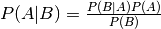
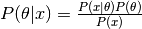
The posterior is proportional to the likelihood times the prior distribution
Bayesian inference works by combining information about parameters 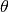 contained in the observed data  as quantified in the likelihood function 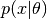. Classical statistics works by making inference about a single point, while Bayesian inference works on the whole distribution. Parameters through the Bayesian lens are treated as random variables described by distributions.
as quantified in the likelihood function 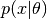. Classical statistics works by making inference about a single point, while Bayesian inference works on the whole distribution. Parameters through the Bayesian lens are treated as random variables described by distributions.
Lets try with an example.
- Predictive value positive - Prob. person has disease given the test was positive.
- 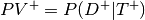
- Predicitve value negative - Prob. person does not have diease given test was negative
- 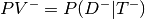
- Sensitivity - Prob. that test positive given person has disease
- 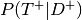
- Specificity - Prob. that test negative given person does not have disease
- 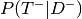
Prevalance - 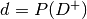
Note that: 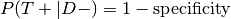
Lets say we wanted to know 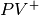.
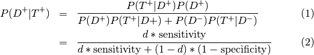
So if we were given
Sensitivity = 0.84, specificity = 0.77, prevalence = 0.20
Then
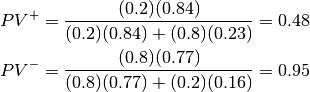